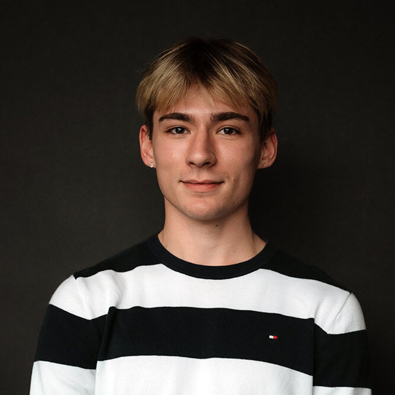

|
Darrion Thornburgh I am a graduating senior from Bard College majoring in both mathematics and computer science. I have the goal of earning a Ph.D. in mathematics and doing research in mathematics as a career. I participated in the 2023 CUBE REU program at Georgia Tech, under the mentorship of Dan Margalit and Wade Bloomquist. During the summer of 2022, I researched at the Bard Summer Research Institute (BSRI) under the mentorship of Lauren Rose. Additionally, I have received the Distinguished Scientist Scholarship at Bard College. |
 |
{kind=link}
ResearchI have a wide variety of interests, but the work that I have done lies in additive combinatorics, cryptography, affine geometry, and geometric group theory. Over the past year, I have been studying almost perfect nonlinear (APN) functions over finite fields and their connections to Sidon sets in \(\mathbb{F}_2^n\). This work will appear in my senior thesis at Bard College, titled Translations of graphs of vectorial functions. My research at the BSRI was in finite geometry and combinatorics and can be applied to the card game EvenQuads. During this time, we completely classified the affine equivalence classes of Sidon sets in \(\mathbb{F}_2^n\) (or 2-caps) of size up to 9. At the Georgia Tech REU, my research was in geometric group theory. In collaboration with Sami Aurin, we proved that the curve graph of the 5-punctured sphere is not 1-hyperbolic. |
Publications |
|
|
Topological methods in zero-sum Ramsey theorey
Florian Frick, Jacon Lehmann Duke, Meenakshi McNamara, Hannah Park-Kaufmann, Steven Raanes, Steven Simon, Darrion Thornburgh, Zoe Wellner Submitted, November 2023; arXiv A cornerstone result of Erdős, Ginzburg, and Ziv (EGZ) states that any sequence of \(2n − 1\) elements in \(\mathbb{Z}/n\) contains a zero-sum subsequence of length \(n\). While algebraic techniques have predominated in deriving many deep generalizations of this theorem over the past sixty years, here we introduce topological approaches to zero-sum problems which have proven fruitful in other combinatorial contexts. Our main result (1) is a topological criterion for determining when any \(\mathbb{Z}/n\)- coloring of an n-uniform hypergraph contains a zero-sum hyperedge. In addition to applications for Kneser hypergraphs, for complete hypergraphs our methods recover Olson’s generalization of the EGZ theorem for arbitrary finite groups. Furthermore, we (2) give a fractional generalization of the EGZ theorem with applications to balanced set families and (3) provide a constrained EGZ theorem which imposes combinatorial restrictions on zero-sum sequences in the original result. |
|

|
How Many Cards Should You Lay Out in a Game of EvenQuads: A
Detailed Study of Caps in AG(n,2)
Julia Crager, Felicia Flores, Timothy E. Goldberg, Lauren L. Rose, Daniel Rose-Levine, Darrion Thornburgh, Raphael Walker La Matematica, May 2023; We define a cap in the affine geometry \(\mathrm{AG}(n,2)\) to be a subset in which any collection of \(4\) points is in general position. In this paper, we classify, up to affine equivalence, all caps in \(\mathrm{AG}(n,2)\) of size \(k \leq 9\). As a result, we obtain a complete characterization of caps in dimension \(n \leq 6\), in particular complete and maximal caps. Since the EvenQuads card deck is a model for \(\mathrm{AG}(6,2)\), as a consequence, we determine the probability that an arbitrary \(k\)-card layout contains a quad. |
|
Template by Jon Barron. |